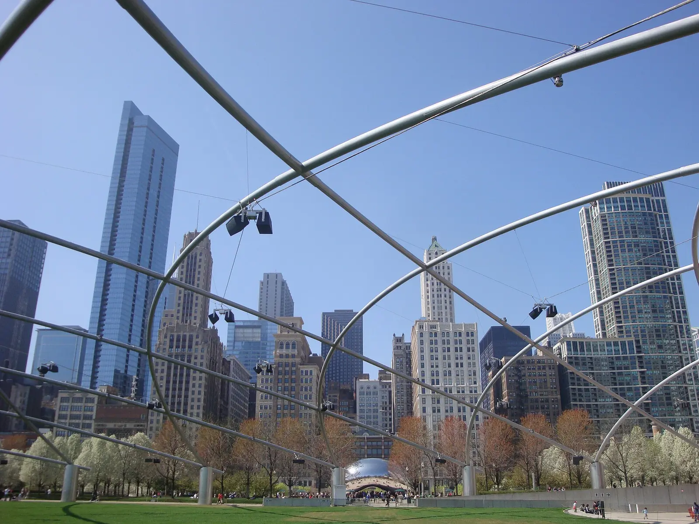

Family hotel shortlist
Prioritize hotels that clearly publish room layout, crib or rollaway policy, parking cost, pool hours, breakfast setup, and cancellation terms.
Chicago, Illinois
Researched with AI (Miles Rowan) · sources linked and dated · How we check
Compare the best family areas in Chicago by stroller ease, room size risk, parking, walkability, noise, pool access, and attraction proximity.
Last updated: July 5, 2026
How this guide was built: Family Tripwise compares official attraction and hotel information, family logistics, search-intent research, and practical planning tradeoffs like age fit, stroller friction, weather backup, nap timing, walking distance, and lodging base.

Family base
Start with the area fit, then use the hotel checks below to compare room setup, parking, pool value, meal friction, and kid reset options before booking.
Area recommender
Prioritize hotels that clearly publish room layout, crib or rollaway policy, parking cost, pool hours, breakfast setup, and cancellation terms.
Before committing to a no-car stay, check sidewalks, elevators, transit station access, hill difficulty, ride-share pickup points, and car-seat logistics for your exact area.
Prioritize family rooms or suites, breakfast, pool hours, laundry, parking cost, elevators, and walking distance to meals or transit.
Sources checked
Use these official pages to verify current hours, ticketing, parking, accessibility, hotel fees, and policies before booking.